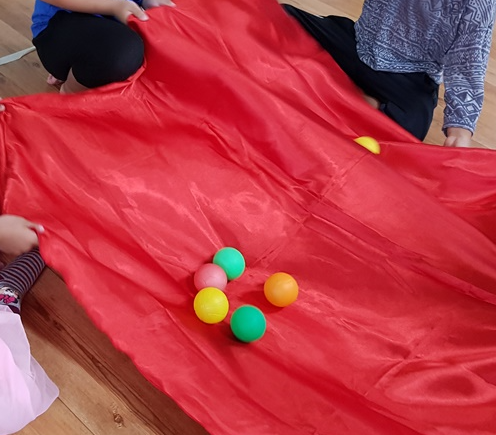

초등 1학년 자신감의 특징
초등학교 1학년 아동들의 자신감은 학교생활과 사회적 상호작용에 큰 영향을 미칩니다. 이 시기의 아동들은 새로운 환경에 적응하고, 새로운 기술을 배우며, 또래 관계를 형성하는 과정에서 자신감을 발전시키거나, 반대로 자신감이 손상될 수 있습니다. 아동의 자신감은 다음과 같은 특징을 보입니다.
1. 새로운 도전에 대한 반응
초등학교 1학년 아동들이 새로운 도전에 반응하는 방식은 그들의 발달 단계, 성격, 그리고 이전 경험에 따라 다양할 수 있습니다. 이 시기는 아동이 유치원이나 가정에서의 보호받는 환경에서 벗어나 더 구조화되고 규칙적인 학교 환경으로 전환하는 중요한 시점입니다. 자신감이 높은 아동은 새로운 활동이나 도전에 대해 호기심과 열정을 보이며, 실패를 두려워하지 않고 시도합니다. 반면, 자신감이 낮은 아동은 도전을 기피하고 쉽게 포기할 수 있습니다.

2. 사회적 상호작용
초등학교 1학년 아동들의 사회적 상호작용은 그들이 사회적 규범과 규칙을 배우는 중요한 시기입니다. 이 나이의 아동들은 친구 관계를 형성하며, 이를 통해 협력, 갈등 해결, 그리고 감정 표현 같은 기본적인 사회적 기술을 발달시킵니다. 역할 놀이는 그들이 다양한 사회적 시나리오를 모방하고 연습하는 주요 활동입니다. 또한 감정을 이해하고 공감 능력을 키우는 데 진전을 보이며, 경쟁과 협력을 통해 건강한 사회적 상호작용을 경험합니다. 이러한 경험은 아동의 자아 존중감과 학교 생활에 대한 긍정적 태도 형성에 기여합니다. 이에 자신감이 있는 아동은 또래와의 상호작용에서 적극적이고, 친구들 사이에서 리더십을 발휘하기도 합니다. 자신감이 부족한 아동은 종종 소극적이거나, 또래 그룹에 통합되기를 주저합니다.
3. 학습 태도
초등학교 1학년 아동의 학습 태도는 호기심이 많고, 새로운 지식과 기술을 배우는 데 열정적인 특성을 보입니다. 이 시기 아동들은 기본적인 읽기, 쓰기, 수학과 같은 학문적 기술을 처음 접하며, 이러한 새로운 학습에 대해 자연스럽게 흥미를 느낍니다. 그러나 아동들은 주의력이 짧고 쉽게 산만해질 수 있어, 교사와 부모는 학습 활동을 다양하고 재미있게 구성할 필요가 있습니다. 또한, 실패에 대한 두려움 없이 시행착오를 겪으며 학습하는 과정에서 자신감을 키워 나갑니다. 아동이 긍정적인 피드백과 격려를 받을 때, 더욱 적극적이고 자발적인 학습 태도를 보이는 경향이 있습니다. 자신감이 높은 아동은 학습에 대해 긍정적인 태도를 가지고 있으며, 어려움을 겪어도 해결책을 찾으려 노력합니다. 자신감이 낮은 아동은 쉽게 좌절하고 학습에 대한 동기 부여가 부족할 수 있습니다.
자신감이 낮은 아동을 위한 지원 방법
자신감이 낮은 초등학교 1학년 아동을 지원하기 위해서는 긍정적인 피드백과 칭찬을 자주 제공하여 아동이 자신의 능력을 인식하도록 도와야 합니다. 작은 성공을 축하하고, 아동이 스스로 목표를 설정하고 달성할 수 있도록 격려하는 것이 중요합니다. 감정을 자유롭게 표현하고 공유할 수 있는 환경을 조성하여 아동이 자신의 감정을 이해하고 관리하는 방법을 배울 수 있도록 해야 합니다. 또한, 아동이 사회적 상호작용을 통해 긍정적인 경험을 쌓을 수 있도록 그룹 활동이나 팀 프로젝트에 참여시키는 것이 좋습니다.
1) 긍정적 피드백 강화
: 아동의 작은 성공이나 노력에 대해 칭찬을 아끼지 않고, 구체적인 긍정적 피드백을 제공하여 자신의 능력에 대한 신념을 강화시켜야 합니다.
2) 성공 경험 제공
: 아동이 성공할 수 있는 활동을 마련해 주어, 성공 경험을 쌓게 하고 이를 통해 자신감을 높일 수 있도록 합니다. 작은 목표에서 시작하여 점차 도전적인 목표로 이동합니다.
3) 감정 표현 지원
: 아동이 자신의 감정을 자유롭게 표현하고 공유할 수 있는 기회를 제공합니다. 감정을 적절히 표현하고 관리하는 방법을 배울 때, 아동은 자신감을 느끼게 됩니다.
4) 사회적 기술 향상
: 집단 활동이나 역할놀이를 통해 아동이 사회적 상황에서 필요한 기술을 배울 수 있도록 도와줍니다. 이는 또래와의 상호작용에서 자신감을 키우는 데 도움이 됩니다.
5) 안정적인 지지 체계 구축
: 가정과 학교에서 일관된 지지와 격려를 제공합니다. 아동이 안정감을 느끼고 자신의 가치를 인식할 수 있도록 지속적인 지지가 필요합니다.
6) 전문가와의 협력
: 필요한 경우, 심리상담 전문가와 협력하여 아동의 자신감 문제를 다루는 것도 고려해야 합니다. 전문가의 도움을 통해 아동의 자신감 증진을 위한 좀 더 체계적인 접근이 가능합니다.
2024.03.16 - [상담] - 초등 1학년 - 정서, 사회적 교류 특성 및 지원 전략
초등 1학년 - 정서, 사회적 교류 특성 및 지원 전략
1. 초등 1학년의 정서적 특성 1) 감정 표현이 다양하게 발달한다 초등1학년 시기의 아이들은 행복, 슬픔, 분노, 두려움과 같은 기본적인 감정을 넘어서, 자신의 감정을 더 세밀하게 인식하고 표현
think-sis.co.kr